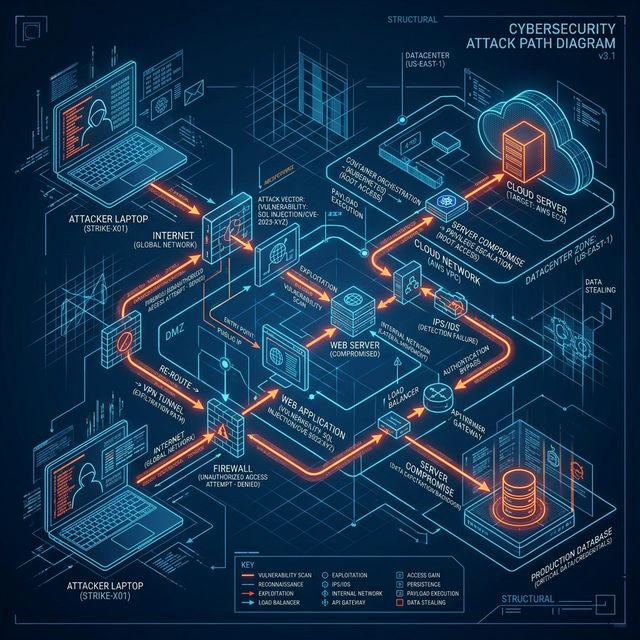

1. Core Concept 🧠
Reporting is the most critical phase of a Penetration Test. If you hack the entire network but write a poor report, the assessment is a failure. The goal is to translate highly technical findings into actionable risk intelligence for both executives and developers.
Real-world analogy: A doctor performing a highly complex MRI (the pentest) is useless unless they provide a clear, readable diagnosis and a prescription (the report) to cure the patient.
2. Report Anatomy 🎯
📄 Executive Summary (For the C-Suite)
↓
📊 Assessment Methodology (How we did it)
↓
🚨 Finding Details (Technical risk, Proof of Concept)
↓
🛠️ Remediation Strategy (How to fix it)
Execution Mapping
| Section | Target Audience | Key Objective |
|---|---|---|
| Executive Summary | CEO, CIO, Board | Plain English bottom line. "Are we safe? What is the business impact?" |
| Vulnerability Matrix | IT Management | Prioritized list of CVEs by Criticality (CVSS Scoring). |
| Technical Detail | Developers, SysAdmins | Exact reproduction steps, HTTP requests/responses, and code patches. |
3. Hands-on Lab 🧪
🧪 Lab: Writing a Critical Finding
💡
Pro Tip: Always use CVSS (Common Vulnerability Scoring System) to objectively justify why an issue is marked "Critical" rather than "High". Never skip the "Proof of Concept" (PoC) block; screenshots are mandatory for clients to believe you.
Architecture Diagram

Report Section Template
Craft a mock finding for the SQL Injection lab from earlier using this professional structure:
**Finding 01: Unauthenticated SQL Injection in Login Portal**
**Severity:** Critical (CVSS v3.1: 9.8 - Network/Low Complexity/No Privileges)
**Affected URL:** `http://internal-app.local/login.php`
**Description:**
The login portal fails to sanitize user input in the `user` parameters before passing it to the database query. This allows an attacker to manipulate the backend query structure.
**Proof of Concept (PoC):**
1. Navigate to the login page.
2. Enter the payload `admin' OR 1=1 --` in the username field.
3. Observe successful authentication bypassing the password check completely.
 **Business Impact:**
An attacker can completely bypass authentication, allowing uninhibited access to sensitive employee data and financial records without needing valid credentials.
**Remediation:**
Implement Prepared Statements (Parameterized Queries) within the `login.php` codebase to separate SQL execution logic from user-supplied data strings.
**Business Impact:**
An attacker can completely bypass authentication, allowing uninhibited access to sensitive employee data and financial records without needing valid credentials.
**Remediation:**
Implement Prepared Statements (Parameterized Queries) within the `login.php` codebase to separate SQL execution logic from user-supplied data strings.Expected Output
A professional, highly clear finding that developers can immediately use to reproduce the error and fix it.